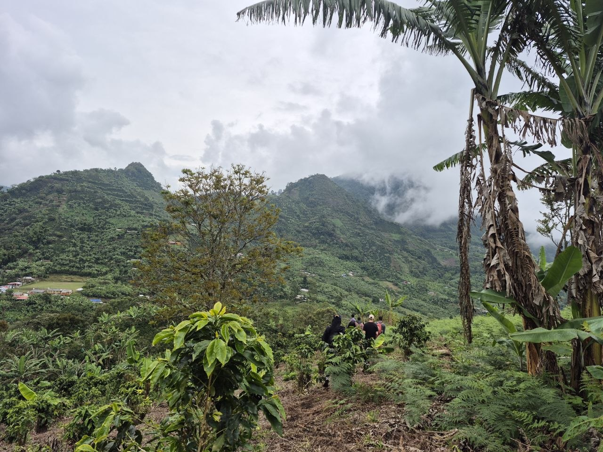
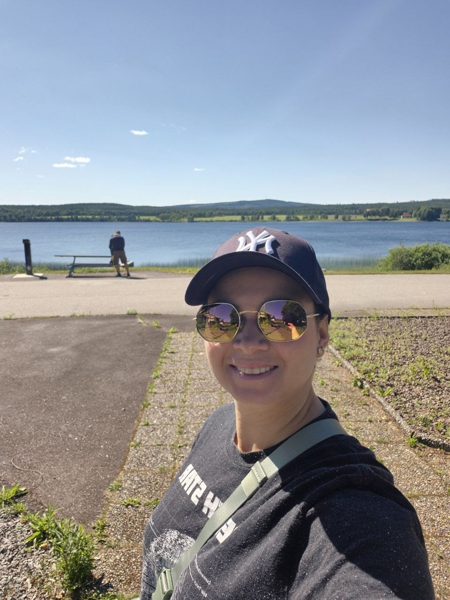
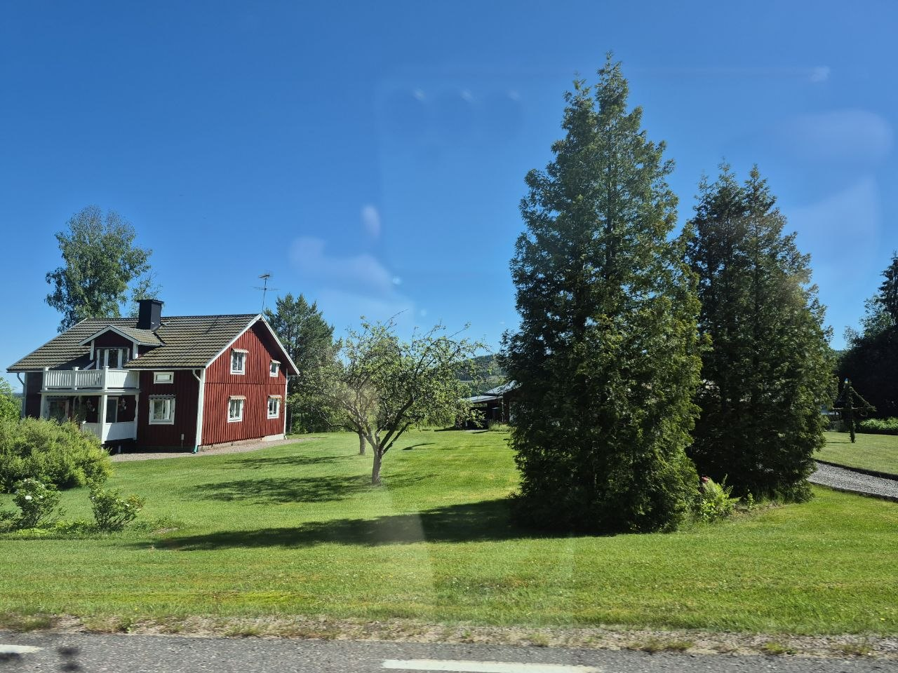
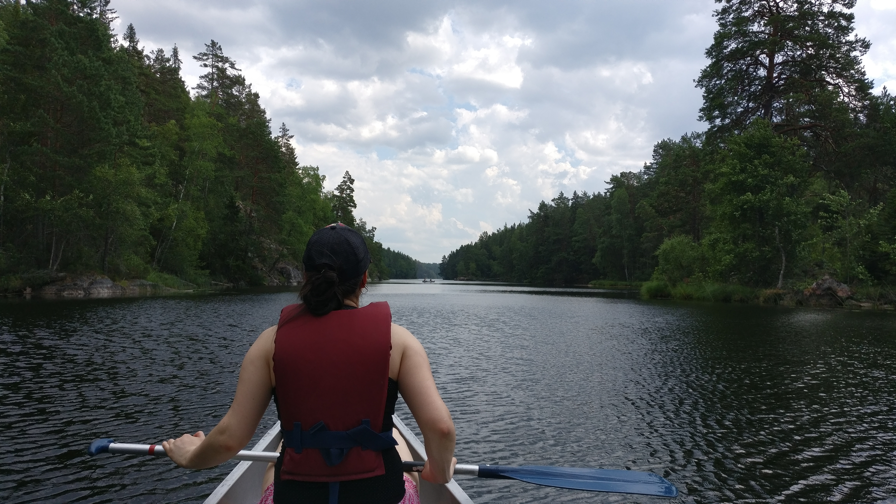

I was born in Colombia in December 1988, and grew up in the calm of the countryside, in a large and loving family. I studied Industrial Engineering and graduated in 2013 — then found my way into code as a self-taught developer, learning something new every day.
Today I'm happily married and living in Sweden with my husband and our four-year-old. Outside of work, I enjoy being outdoors, listening to podcasts, playing badminton, trying new food, and spending time with family and friends.